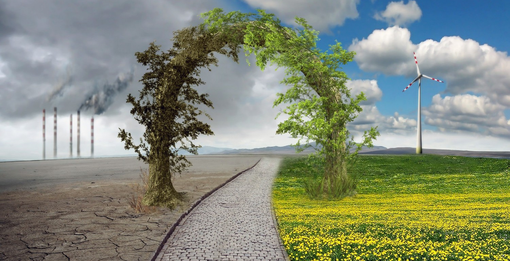

Luego de que el planeta Tierra comienza a sufrir cambios meteorológicos bruscos que provocan olas de frío o calor, inundaciones severas o granizadas devastadoras, el científico Jake Lawson (Gerard Butler) diseña un sistema satelital llamado “El Héroe de Holanda” para controlar el clima. Esto permite estabilizar los fenómenos climáticos y crea las condiciones para el bienestar y el desarrollo de los países. Sin embargo, la personalidad “políticamente incorrecta” de Jake hace que lo expulsen del programa y queda como responsable su hermano menor Max (Jim Sturgess), que tiene la habilidad de lidiar con la clase política. Tres años después, el sistema experimenta fallas inexplicables y Max sabe que sólo su hermano puede repararlo, de tal manera que se ven obligados a llamarlo. Jake acepta el reto no sin reticencias, debido a que le ha prometido a su pequeña hija Hannah (Talitha Bateman) mantenerse vivo para protegerla. Así es como se embarca nuevamente hacia la estación espacial, donde pondrá en juego todos sus conocimientos para reparar a “El Héroe de Holanda” y evitar una catástrofe climática global llamada Geotormenta.
Argumento
La pelìcula nos muestra como en un futuro no muy lejano, las consecuencias del cambio climático han sido terribles, dejando gran devastación por todas partes del mundo. Es entonces cuando los líderes de varias naciones, deciden utilizar su conocimiento en ciencia y tecnología para poner un freno a la furia de la madre naturaleza. Un equipo de científicos crean una estación espacial llamada Dutch Boy capaz de controlar una red de satélites meteorológicos que tienen la misión de monitorear los fenómenos atmosféricos de la Tierra y manipular su impacto. Luego de que un par de satélites comienzan a mostrar signos de malfuncionamiento, ocasionando graves daños en varios países, Lawson regresa al espacio para descubrir que un misterioso virus está invadiendo los satélites con el fin de crear la peor catástrofe meteorológica, bautizada como la Geostorm, o geo-tormeta,
Ficha Técnica
Director:
Dean Devlin
Dirección artística:
Vlad Bina
Producción:
Dean Devlin
David Ellison
Dana Goldberg
Rachel Olschan
Marc Roskin
Guión:
Dean Devlin
Paul Guyot
Música:
Lorne Balfe
Fotografía:
Roberto Schaefer
Montaje:
Ron Rosen
Chris Lebenzon
John Refoua
Reparto:
Gerard Butler
Jim Sturgess
Abbie Cornish
Alexandra Maria Lara
Amr Waked
Eugenio Derbez
Ed Harris
Andy García
País:
Estados Unidos
Estreno:
20 de octubre de 2017
Género:
Acción y ciencia ficción
Duración:
109 minutos
Idioma:
inglés
Productora:
Warner Bros. Pictures
Electric Entertainment
Skydance Productions
Distribución:
Warner Bros. Pictures
Presupuesto:
$120 000 0001
Recaudación:
$221.6 millones
Trailer
Análisis sobre la película
Tenemos una película que maneja varias temáticas, algunas que incluso, nos hemos preguntado mucho en nuestras eternas teorías de conspiración, ¿puede ser el clima modificado por la tecnología? y si es así, ¿existirá la posibilidad de que un solo país pueda modificar el clima a su antojo para controlar al resto de la humanidad?. Sin duda un tema que siempre ha causado interés y donde de pronto veremos cómo esto va deshilando un misterio que se torna pronto en un evento catastrófico y global, tal y como ocurrió en cintas como "El Día Después de Mañana", la cual se convertiría en el punto de comparación.
Es cierto, tenemos un sistema que puede funcionar perfectamente para ayuda de la humanidad, pero como he dicho varias veces «no se puede tener nada bonito sin que alguien lo ensucie» y esa es más o menos la idea de la cinta, la cual es demasiado simple de ejecutar y que se envuelve en una gran cantidad de escenas de acción, algunas causadas por los fenómenos climatológicos que la Geo-Tormenta desata y otras por la propia acción que nos obligamos a ver en esta película.
Cambio climático

Se llama cambio climático a la variación global del clima de la Tierra. Es debido a causas naturales y también a la acción del hombre y se producen a muy diversas escalas de tiempo y sobre todos los parámetros climáticos: temperatura, precipitaciones, nubosidad, etc. El término "efecto de invernadero" se refiere es la retención del calor del Sol en la atmósfera de la Tierra por parte de una capa de gases en la atmósfera. Sin ellos la vida tal como la conocemos no sería posible, ya que el planeta sería demasiado frío. Entre estos gases se encuentran el dióxido de carbono, el óxido nitroso y el metano, que son liberados por la industria, la agricultura y la combustión de combustibles fósiles. El mundo industrializado ha conseguido que la concentración de estos gases haya aumentado un 30% desde el siglo pasado, cuando, sin la actuación humana, la naturaleza se encargaba de equilibrar las emisiones.
En la actualidad existe un consenso científico, casi generalizado, en torno a la idea de que nuestro modo de producción y consumo energético está generando una alteración climática global, que provocará, a su vez, serios impactos tanto sobre la tierra como sobre los sistemas socioeconómicos.
Ya en el año 2001 el Tercer Informe de Evaluación del Grupo Intergubernamental de Expertos sobre Cambio Climático (IPCC) ponía de manifiesto la evidencia proporcionada por las observaciones de los sistemas físicos y biológicos que mostraba que los cambios regionales en el clima, en concreto los aumentos de las temperaturas, estaban afectando a los diferentes sistemas y en distintas partes del globo terráqueo. Señalaba, en definitiva, que se están acumulando numerosas evidencias de la existencia del cambio climático y de los impactos que de él se derivan. En promedio, la temperatura ha aumentado aproximadamente 0,6°C en el siglo XX. El nivel del mar ha crecido de 10 a 12 centímetros y los investigadores consideran que esto se debe a la expansión de océanos, cada vez más calientes.
El cambio climático nos afecta a todos. El impacto potencial es enorme, con predicciones de falta de agua potable, grandes cambios en las condiciones para la producción de alimentos y un aumento en los índices de mortalidad debido a inundaciones, tormentas, sequías y olas de calor. En definitiva, el cambio climático no es un fenómeno sólo ambiental sino de profundas consecuencias económicas y sociales. Los países más pobres, que están peor preparados para enfrentar cambios rápidos, serán los que sufrirán las peores consecuencias.
Se predice la extinción de animales y plantas, ya que los hábitats cambiarán tan rápido que muchas especies no se podrán adaptar a tiempo. La Organización Mundial de la Salud ha advertido que la salud de millones de personas podría verse amenazada por el aumento de la malaria, la desnutrición y las enfermedades transmitidas por el agua.
Análisis sobre el cambio climático
El cambio climático es el conjunto de grandes y rápidas perturbaciones provocadas en el clima por el aumento de la temperatura del planeta. Se trata del problema ambiente “más importante al que se enfrente la humanidad”. Los principales causantes de este fenómeno son los gases, sobre todo el CO2, que a diario emite la actividad humana a través del consumo eléctrico (pues la mayoría de la electricidad la obtenemos mediante la quema de carbón, petróleo y gas), el transporte a motor y los sistemas de calefacción que se basan en combustibles fósiles como el carbón, el gasóleo y el gas. También contribuimos a la emisión de CO2, a través del consumo irresponsable, pues en la venta de todo producto hay un gasto energético de producción y transporte (si además el producto está producido a grandes distancias el gasto será mayor, así como si se compone básicamente de plásticos u otros derivados del petróleo). Muchas de las consecuencias del cambio climático ya se pueden ver: aumento de huracanes y de la frecuencia de inundaciones, subida del nivel del mar, más incendios forestales. Hay varias maneras de contrarrestar este problema como cambiar las bombillas, apagar la PC y la Tele, reciclar, plantar un árbol y otros.
Opinión Personal
Podemos observar que mientras pasa el tiempo peor esta la situación del planeta respecto a varios temas como ser el calentamiento global.
Y en mi opinión el mayor problema en si es el hombre ya que nosotros somos los principales causantes de los graves cambios climáticos que existen y lo peor de todo es que a pesar de ver las consecuencias hay gente que sigue negándolo y otras que no hacen nada al respecto. Si seguimos sin hacer nada dentro de muy poco notaremos a gran escala las consecuencias del cambio climático. Pienso que algomuy importante es el informarce sobre el tema lo mas posible para asi agarrar conciencia, para saber como uno puede ayudar y aportar nuestro pequeño pero imprescindible grano de arena.
El primer paso es cambiar muchos de nuestros hábitos diarios que perjudican al medio ambiente.
 Ya en el año 2001 el Tercer Informe de Evaluación del Grupo Intergubernamental de Expertos sobre Cambio Climático (IPCC) ponía de manifiesto la evidencia proporcionada por las observaciones de los sistemas físicos y biológicos que mostraba que los cambios regionales en el clima, en concreto los aumentos de las temperaturas, estaban afectando a los diferentes sistemas y en distintas partes del globo terráqueo. Señalaba, en definitiva, que se están acumulando numerosas evidencias de la existencia del cambio climático y de los impactos que de él se derivan. En promedio, la temperatura ha aumentado aproximadamente 0,6°C en el siglo XX. El nivel del mar ha crecido de 10 a 12 centímetros y los investigadores consideran que esto se debe a la expansión de océanos, cada vez más calientes.
Ya en el año 2001 el Tercer Informe de Evaluación del Grupo Intergubernamental de Expertos sobre Cambio Climático (IPCC) ponía de manifiesto la evidencia proporcionada por las observaciones de los sistemas físicos y biológicos que mostraba que los cambios regionales en el clima, en concreto los aumentos de las temperaturas, estaban afectando a los diferentes sistemas y en distintas partes del globo terráqueo. Señalaba, en definitiva, que se están acumulando numerosas evidencias de la existencia del cambio climático y de los impactos que de él se derivan. En promedio, la temperatura ha aumentado aproximadamente 0,6°C en el siglo XX. El nivel del mar ha crecido de 10 a 12 centímetros y los investigadores consideran que esto se debe a la expansión de océanos, cada vez más calientes.